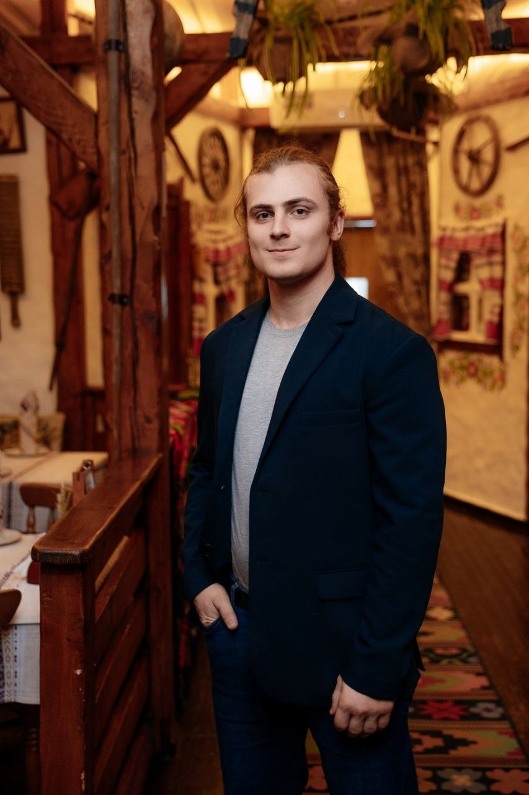
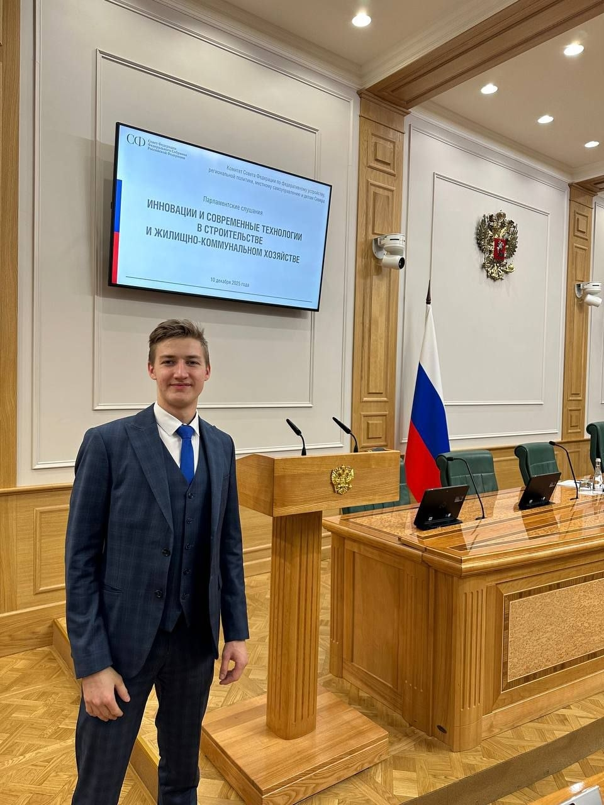

Наука ГУУ
Аналитические материалы, исследования и эссе участников сообщества — от советско-китайских отношений до молодёжной политики современной России.
Раздел
Политическое измерение космической гонки, международное сотрудничество и современные программы.
ПерейтиРаздел
ГДР, политика памяти и современные германо-российские отношения в контексте СВО.
ПерейтиРаздел
Эстония, Латвия, Литва — история региона, российско-прибалтийские отношения и их деградация.
ПерейтиРаздел
Советско-китайское и российско-китайское взаимодействие: энергетика, промышленность, политика.
ПерейтиРаздел
Работы молодых исследователей: история, геополитика, семейная политика и современные вызовы.
ПерейтиРаздел
Построение послевоенного мира, международное правосудие и политические уроки.
Перейти
Ответственный за раздел
Дмитрий Осипов
Редактор раздела
2026
Кто и зачем заполняет орбиту военными спутниками? Автор разбирает 24 года запусков трёх сверхдержав и выясняет, кто первым начал новую космическую гонку — и как страны обходят старые договоры
Читать2026
Новые правила игры на Луне: кому на самом деле выгодны «Соглашения Артемиды»? В статье показано, как один документ объединяет выгоды государства, частных корпораций и даже личные амбиции американских президентов.
Читать2026
Как сравнить науку в космосе, когда у всех разный бюджет и разная степень секретности? Статья предлагает честную балльную систему, которая показывает, кто получает максимум открытий на каждый потраченный миллиард.
Читать2026
Две трети выпускников-политологов работает не по специальности, а государство их почти не замечает. Почему при спросе на гуманитариев молодые специалисты остаются за бортом науки и профессии?
Читать2026
США запускают тысячи спутников, Китай строит орбитальные станции, а Россия… пока догоняет. Статья — честный взгляд на то, кто сегодня задаёт тон в космосе и что на самом деле осталось от великой космической державы.
ЧитатьОтветственный за раздел
Иван Калюжный
Редактор раздела
2025
Политический портрет И.В. Сталина: характер, методы управления и историческое наследие.
Читать2025
Исследование современной обстановки среди молодёжи в политике.
Читать2025
Экономика и цифры: анализ объёмов и характера германских военных поставок.
Читать2025
Исследование современной геополитической стратегии США на американском континенте.
Читать2025
Исследование истории становления Американской Империи от колониального периода до современности.
Читать2025
Разбор истории отношений двух стран от первых контактов до современного противостояния.
Читать2025
Исследование механизмов и показателей мобилизационной готовности национальной экономики.
ЧитатьОтветственный за раздел
Дмитрий Абрамов
Редактор раздела
2024
Эссе о политическом деятеле и историке П.Н. Милюкове — его взглядах, роли в истории России и либеральном наследии.
Читать2024
Анализ политического взаимодействия России и Финляндии — от исторических предпосылок до современного состояния.
Читать2024
Исследование процесса деградации отношений между Россией и прибалтийскими государствами после 1991 года.
Читать2024
Исследование геополитической стратегии США на американском континенте и её глобального измерения.
Читать2025
Анализ взглядов В.В. Жириновского на этническую и геополитическую проблематику России.
Читать2025
Исследование политического наследия и продолжающегося влияния идей Жириновского на российскую политическую жизнь.
ЧитатьОтветственный за раздел
Иван Белозеров
Редактор раздела
2025
Анализ особого политического и правового статуса Чечни в системе российского федерализма.
2025
Исследование первого этапа советско-китайского энергетического сотрудничества в период дружбы двух держав.
Читать2025
Политэкономический анализ советско-китайских отношений в период нормализации после «великого раскола».
Читать2025
Анализ советско-китайского сотрудничества в энергетике и промышленности в контексте позднесоветского кризиса.
Читать2025
Становление российско-китайского стратегического партнёрства в первое постсоветское десятилетие.
Читать2025
Исследование зрелого этапа российско-китайского взаимодействия — от деклараций к реальным энергетическим проектам.
Читать
Ответственный за раздел
Павел Зарубин
Редактор раздела
2024
Анализ попыток выстроить систему коллективной безопасности в межвоенной Европе и причин её провала.
Читать2024
Исследование политического и цивилизационного значения религиозного выбора, сделанного Александром Невским.
2024
Анализ природы и ограничений политической власти А.Ф. Керенского в условиях революционного 1917 года.
Читать2024
Оценка действующих инструментов и результатов государственной семейной политики в современной России.
Читать2025
Критический анализ усилий стран БРИКС по снижению зависимости от доллара и реальных успехов этого процесса.
2025
Исследование государственных механизмов формирования молодёжного кадрового резерва в сфере спортивного управления.
2026
Анализ государственных программ жилищного обеспечения многодетных семей и их практической результативности.
Ответственный за раздел
Дмитрий Фомкин
Редактор раздела
2025
2025
Нюрнбергский процесс стал не только судом над лидерами фашистской Германии, но и ареной политического противостояния между спецслужбами стран-победительниц — СССР, США, Великобритании и Франции, которое происходило на фоне обострения отношений между будущим капиталистическим и коммунистическим блоками.
Читать2024
В период Холодной войны шахматы стали важным полем противостояния между СССР и США, где победы шахматистов использовались для демонстрации интеллектуального превосходства идеологий: советская система с государственной поддержкой шахматной школы доминировала, выпустив большинство чемпионов мира.
Читать2026